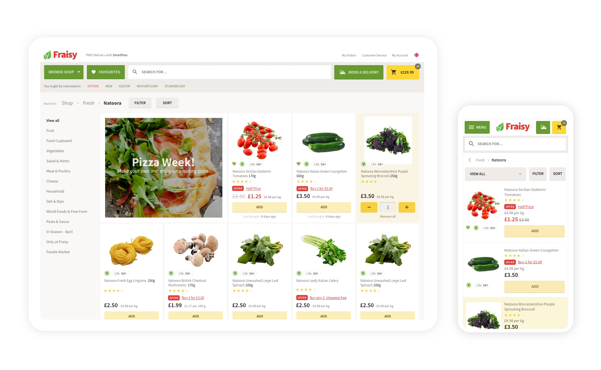
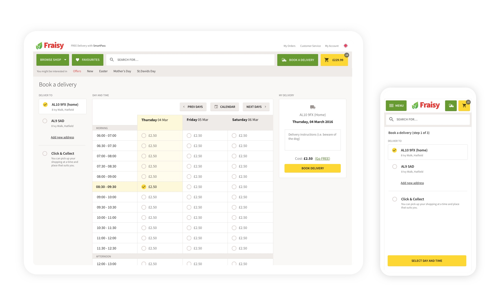
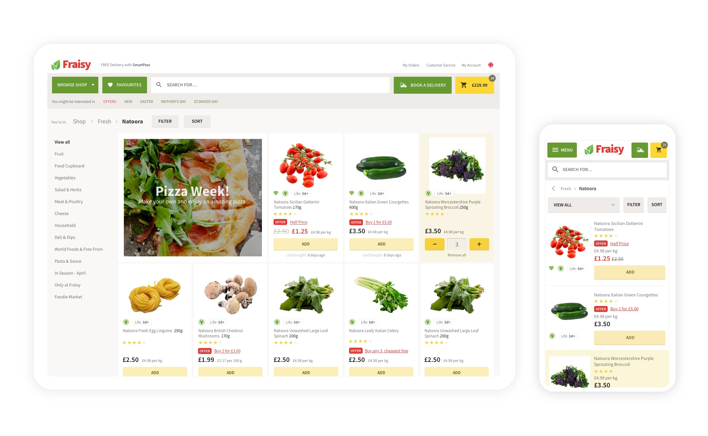
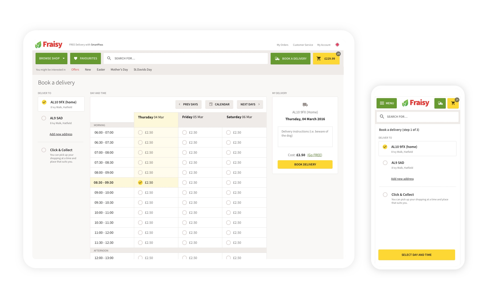

How it all started...
I was leading the UX and Design of the Speciality Stores (the new Ocado's General Merchandise Platform) when the Head of eCommerce OSP approached me with the OSP's headaches. He asked me if I could spend a bit of my [free] time to support OSP with some visuals, thus to solve probably the most diminutive of all issues. Regardless of being fully aware that a few made-up nice graphics would not have solved the bigger problem, enthusiastically I agreed to help out.
After a few weeks of fun in putting together visual concepts and a long-term vision, I pitched the need for design to facilitate and speed up the delivery of the Ocado Smart Platform.
Soon after, I was officially responsible for initiating and leading the UX and Design Chapter of the Ocado Smart Platform.
PS: I had to split my responsibilities between starting the new Design Chapter in OSP and leading the Design of the Speciality Stores for the first six months. I moved full-time to OSP soon after launching Fabled.com, the beauty commerce site built in partnership with Marie Claire.


 


